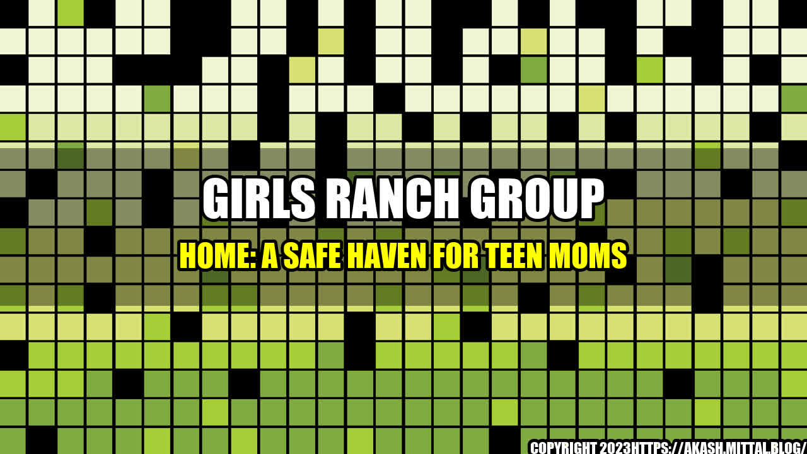

Girls Ranch Group Home: A Safe Haven for Teen Moms

Imagine being a teenager and finding out you're pregnant. The news can be overwhelming and scary, especially if you don't have a supportive family or community. That's where Girls Ranch comes in. This group home provides a safe haven for teen moms and their babies, where they can get the support they need to have a successful future.
What is Girls Ranch?
Girls Ranch is a residential program for teen moms aged 12-18 and their babies. The program is designed to provide a supportive environment where young mothers can complete their education, develop life skills, and learn how to parent their children in a healthy way. The program is based on the belief that every young mother has the potential to achieve her goals and create a positive future for herself and her child.
How does Girls Ranch work?
Girls Ranch provides a variety of services to its residents, including:
- Education: Girls Ranch partners with a local high school to provide on-site schooling for its residents. The program also offers tutoring and homework help to ensure that residents stay on track with their studies.
- Counseling: Every resident at Girls Ranch has access to individual counseling as well as group therapy sessions. This support is designed to help young mothers process any trauma or challenges they may have faced and develop healthy coping mechanisms.
- Parenting classes: Girls Ranch offers parenting classes to help young mothers learn how to care for their babies and develop positive parenting techniques.
- Life skills training: Girls Ranch provides training and support in areas such as job readiness, financial literacy, and household management. The program also offers cooking and nutrition classes so that residents can learn how to prepare healthy meals for themselves and their children.
- Childcare: Girls Ranch has a licensed childcare center on-site, where residents can bring their babies while they attend school or participate in other program activities.
The impact of Girls Ranch
Girls Ranch has had a significant impact on the lives of the young mothers who have participated in the program. Here are just a few examples:
- 81% of Girls Ranch graduates have gone on to college or vocational school.
- 100% of Girls Ranch residents have completed their high school education.
- Girls Ranch moms have a 95% success rate in maintaining custody of their children after leaving the program.
- Girls Ranch was awarded a 2020 Top-Rated Nonprofit Award by GreatNonprofits for its positive impact on the community.
Girls Ranch has also had a positive impact on the community at large. The program has been recognized for its work in preventing teen pregnancy and reducing the number of families living in poverty.
Personal stories
The impact of Girls Ranch can be seen in the personal stories of its residents. Here are two examples:
Case study 1: Sarah
Sarah came to Girls Ranch when she was 17 and pregnant. She had dropped out of high school and was living with her boyfriend, who was abusive. Sarah had no other family or friends to turn to. At Girls Ranch, Sarah was able to complete her high school education, learn parenting skills, and develop a support system. She also received counseling to help her process the trauma of her past relationship. Today, Sarah is a college student and a proud mother to a healthy 2-year-old boy.
Case study 2: Maria
Maria was just 14 when she became pregnant. Her parents were undocumented immigrants who worked long hours and were unable to provide the support Maria needed. At Girls Ranch, Maria was able to complete her high school education and learn valuable life skills. She also received counseling to help her cope with the stress of being a young mother. Today, Maria works as a nurse and is a proud mother to a 5-year-old daughter.
Conclusion
Girls Ranch is a unique program that is making a real difference in the lives of teen moms and their babies. By providing a safe and supportive environment, Girls Ranch is helping young mothers develop the skills and confidence they need to create happy, healthy futures for themselves and their children. If you or someone you know is a teen mother in need of support, consider reaching out to Girls Ranch for more information.
- Girls Ranch website: https://www.girlsranch.org/
- GreatNonprofits: #GirlsRanch
- Twitter: #TeenMoms
- Facebook: #SafeHaven
Curated by Team Akash.Mittal.Blog
Share on Twitter Share on LinkedIn